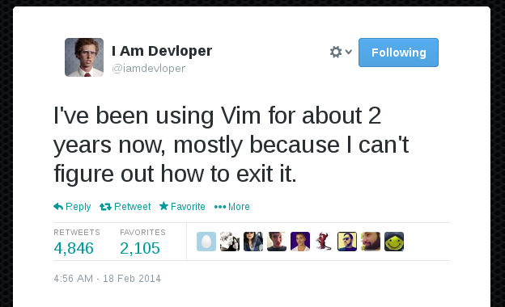

Introduction to Vim¶
Written by Yicheng Wang on 2016-04-05
Reformatted by Yuanchu Liu on 2017-04-04
What is Vim¶
Vim stands for “vi-improved”, which in turn stands for “visual instrument-improved.” It is one of the most widely used text editors on the planet. It is a terminal based programmable editor, backed by its very own (and much hated) macro language vimscript, but supports interpreters of a wide array of scripting languages such as bash, python, ruby, perl, and lua.
It is worth noting that Vim (or at least Vi) comes pre-installed in almost every Linux distribution, and it is worthwhile for everyone to at least know the basics of Vim because it’s going to come in handy sometimes down the line.
Installing Vim¶
Vi should come pre-installed in almost all Linux distributions. To install vim in Ubuntu, one needs to
run: $ sudo apt-get install vim. For other operating systems, one can get instructions from the vim
website here.
Using Vim¶
The hallmark of Vim and what distinguishes it from other text editors is its modal nature. Vim operates in several modes, each with its own key bindings and functions, here’s a brief rundown of the three most basic ones:
- Normal Mode: The default mode that Vim is in. This is the mode that Vim starts in. It is also where
you put in a lot of the commands for Vim. Commands are entered either by a key binding or by typing
:in normal mode. One can enter this mode by pressing<Esc>in any of the other modes. - Insert Mode: Triggered by typing
iin normal mode, this what you use to insert characters into the buffer. This is also why people are so confused when they smash keys and they don’t appear on the screen in Vim - they need to be in insert mode! - Visual Mode: Triggered by typing
vin normal mode, this is what you use to select text within the buffer.
This system may seem convoluted and overtly complicated at first, but it actually opens up so many quick key bindings by quickly switching between normal and insert mode. It will make sense after a while, trust me.
But to beginners this may be very confusing, and this is perhaps best illustrated by the simple act of exiting Vim. This is a frustration to many and a running joke in the community, as demonstrated by the following tweet:
This is how you quit Vim: :q! in normal mode. The q stands for “quit” and ! stands for ignore
warnings and errors.
Apart from q, here are a few more commands to start (optional parameters are surrounded by
parenthesis, necessary parameters are surrounded by brackets):
- Movement (Applicable in Both Normal and Visual Modes)
hLeftjDownkRight$Go to end of line^Go to beginning of linexCut character under cursorsCut current character AND enter insert mode
- Visual Mode Key Bindings and Commands:
yYanks (copies) selected text
- Normal Mode Key Bindings and Commands:
pPaste after the cursorPPaste before the cursoriEnter insert modevEnter visual modeoCreate newline and enter insert modeOCreate newline before current line and enter insert modeAGo to end of current line and enter insert modeIGo to beginning of current line and enter insert mode:w (filename)Write/save:sp (filename)Split screen horizontally, if a filename is provided, also opens said file:vsp (filename)Split screen vertically<Ctrl>w [direction]Switch to buffer in [direction] of the current one:![shell command]Execute shell command/[string]Search for the given string
Configuring/Personalizing Vim¶
Vim is a programmable editor, it comes with its own scripting language vimscript, which is a very interesting language. I will not cover it here, but this book is a really good tutorial. But before you click on the link, let us first go over where these stuff goes.
There is a folder that stores your Vim configurations, it is a part of the Vim RUNTIME_PATH variable, and
on unix-based systems it is located at ~/.vim and on Windows it’s located at %USERPROFILE%. In
this file one puts one’s personal configuration and settings. It is worthwhile to dig around a bit around
the Vim Tip Wiki for guidelines. If you want a sample, here’s
my vimrc file.
Useful Plugins¶
Of course, like Emacs, Vim has a great community and tons of useful plugins. Some useful plugins I use are:
- NERDTree - A directory explorer for Vim
- Syntastic - A Automatic Syntax Checking for Vim
- UltiSnips - Powerful Snippet Tool for Vim
- Vim-Surround - Surrounding Changes (This sounds stupid and dumb but is super useful)